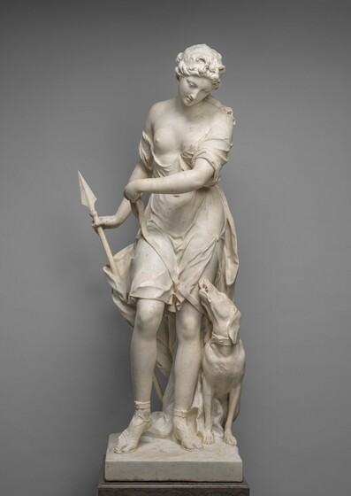
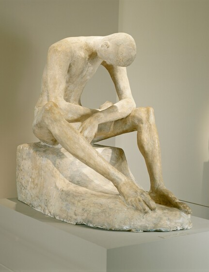
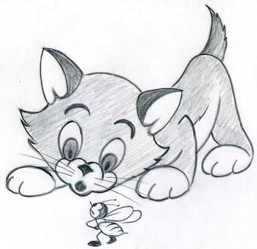

Music
What is Music?
Music is a collection of coordinated sound or sounds. Music is the process of putting sounds and tones in an order, often combining them to create a unified composition. People who make music creatively organize sounds for a desired result, like a Beethoven symphony or one of Duke Ellington's jazz songs.
Music is made of sounds, vibrations, and silent moments, and it doesn't always have to be pleasant or pretty. It can be used to convey a whole range of experiences, environments, and emotions. Different generes of Music includes:
- Jazz
- jazz, musical form, often improvisational, developed by African Americans and influenced by both European harmonic structure and African rhythms.
- Pop
- a type of music, usually played on electronic instruments, that is popular with many people because it consists of short songs with a strong beat and simple tunes that are easy to remember. Pop music is often simply called pop.
- Rock
- rock, also called rock and roll, rock & roll, or rock ’n’ roll, form of popular music that emerged in the 1950s. It is certainly arguable that by the end of the 20th century rock was the world’s dominant form of popular music.
- Rhythm and Blues
- Rhythm and Blues as we understand it today most often describes a style of music that developed after World War II that combines elements of pop, gospel, blues and jazz with a strong back beat.
- Reggea
- popular music of Jamaican origin that combines native styles with elements of rock and soul music and is performed at moderate tempos with the accent on the offbeat
- Hip Hop
- Hip-Hop music is a musical genre consisting of a stylized rhythmic music originally created by DJs isolating the percussion breaks of popular songs, sometimes with two turntables to extend the breaks.
- Gospel
- Gospel music is a style of Christian music that has both inspired and drawn from popular music traditions.
- Blues
- The blues is a type of music which was developed by African American musicians in the southern United States. It is characterized by a slow tempo and a strong rhythm.
- Folk
- Folk music, type of traditional and generally rural music that originally was passed down through families and other small social groups.
- Country
- Country music is style of music from the southern and western regions of the United States, often focused on the stories of the people living in those regions.
- Soul
- Soul music was originated in African American gospel singing, is closely related to rhythm and blues, and is characterized by intensity of feeling and vocal.
Sculpture
What is Sculpture?

sculpture, an artistic form in which hard or plastic materials are worked into three-dimensional art objects. The designs may be embodied in freestanding objects, in reliefs on surfaces, or in environments ranging from tableaux to contexts that envelop the spectator.

An enormous variety of media may be used, including clay, wax, stone, metal, fabric, glass, wood, plaster, rubber, and random “found” objects. Materials may be carved, modeled, molded, cast, wrought, welded, sewn, assembled, or otherwise shaped and combined. The seven elements of Sculputue includes:
- Line
- Line is defined as a point moving in space where its length is greater than its width.
- Color
- Color can be used symbolically or to produce a pattern or to show contrast in a piece.
- Value
- Value is the lightness or darkness in color.
- Shape
- Shape is the result of closed lines, they are two dimensional and flat. Shapes can be geometric, such as squares or triangles or they can be organic and not have defined parameters and are more curved and abstract. Shapes in art can be used to control how the viewer perceives a piece.
- Form
- When shape acquires depth and becomes three dimensional, it takes on form.
- Space
- Space is any area an artist creates for a specific purpose. Space can be positive or negative. Positive space is an area occupied by an object or form. Negative space is the area that runs between, through, and around or within objects. This includes background, foreground, and middle ground. Space that can be manipulated in art based on how an artist uses lines, shape, form, and color.
- Texture
- Texture is how an object looks or feels. Sometimes texture can actually felt, such as in sculpture or the texture of work can be implied such as if you were to sketch a sheep’s wool. Some words to describe texture include soft, hard, rough, brittle, fluffy, or smooth.
Drawing
What is Drawing?

Drawing, the art or technique of producing images on a surface, usually paper, by means of marks, usually of ink, graphite, chalk, charcoal, or crayon.
Drawing as formal artistic creation might be defined as the primarily linear rendition of objects in the visible world, as well as of concepts, thoughts, attitudes, emotions, and fantasies given visual form, of symbols and even of abstract forms. The six main techniques in drawing for accuracy are:
- Sighting / Measuring
- We can use “tools” to measure proportions of our subject in order to improve the accuracy of what we record in our drawings. We can use any tool that we wish, but a pencil works surprisingly well.
- The Grid Technique
- The grid technique is an approach to drawing that breaks the subject down into “bite-sized” pieces of visual information.
- Triangular Grid Technique
- An alternative to using the traditional grid technique is the triangular grid technique. This technique uses far less lines but requires a bit more from the artist.
- Linear Perspective
- Linear perspective is a system that uses lines to aid the artist in creating the illusion of space in a drawing.
- Basic Facial Proportions
- Although every face is different, certain approximate facial proportions do exist. We can use these approximations to ensure that the features of the face are placed in the right locations and that the size of each of the features are natural.
- Figure Proportions and Gesture Drawing
- Just as knowledge of basic facial proportions can be used to ensure accuracy in portrait drawing, knowledge of approximate figure proportions can aid in creating accurate figure drawings